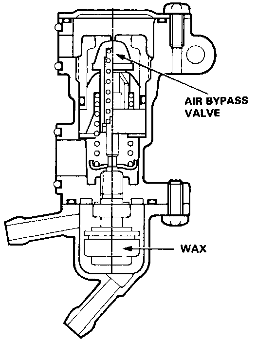

Auxiliary Air Valve (Idle Speed): Description and Operation
Fast Idle Thermo Valve:

PURPOSE
Prevents erratic running when the engine is warming up by allowing extra air into the intake manifold to raise the idle speed.
OPERATION
An air bypass valve is controlled by a thermowax plunger. When the engine coolant is below 30° C (86° F), the engine coolant surrounding the thermowax capsule contracts the plunger, allowing additional air to be bypassed into the intake manifold so that the engine idles faster. When the engine reaches operating temperature, the valve closes, reducing the amount of air bypassing into the intake manifold.
CONSTRUCTION
A thermowax capsule controlled air bypass valve is contained in a cast aluminum housing.